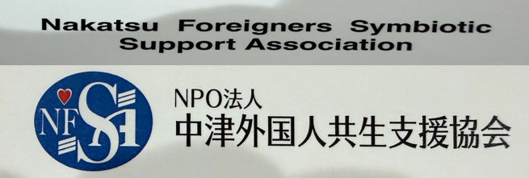
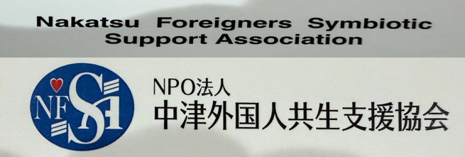

About Us
NAVIGATION PARTNERS Ltd. is a registered support organization dedicated to connecting foreign talent with Japanese companies.
We provide professional, reliable, and compassionate support to ensure that both employers and foreign workers can build long-term, successful partnerships.
Licensed as a Registered Support Organization in January 2026, we are committed to delivering trustworthy and high-quality support services.
Company Profile
Company Name: NAVIGATION PARTNERS Ltd.
Representative Director: Naoto Takano
Registered Support Organization No.: 26登-012962
Established: October 18, 2025
Address:
ING Building II, Room 401
8-10 Toyodamachi, Nakatsu City
Oita 871-0058, Japan
Tel: +81-979-33-8686
Fax: +81-979-33-8687
Mobile: +81-70-2494-2145
Business Activities
• Registered Support Organization (SSW)
• Manufacturing Contracting
• Paid Employment Placement
• Life Support Services
Email:
worker_support@naviners.com

Company History
October 1992
Mr. Jisho Hosokawa (current Chairman) founded M&H Motors Co., Ltd. and appointed as Representative Director
June 2025
Company name changed to NAVIGATION PARTNERS Co., Ltd. and Mr. Naoto Takano was appointed as Representative Director
September 2025
Capital increased to 5 million yen
October 2025
NAVIGATION PARTNERS Co., Ltd. commenced operations under the new structure
January 2026
Licensed as a Registered Support Organization for Specified Skilled Workers.
Meet Our Officers and Staff
Naoto Takano
With hands-on experience in supporting foreign workers, Mr. Takano is dedicated to creating a safe and reliable environment for both companies and international talent.
He values strong relationships and focuses on building systems that allow workers to continue their employment with confidence over the long term.
As President and CEO, he strives to provide services that contribute to the growth of both the local community and partner businesses.

Jiso Hosokawa
Mr. Jisho Hosokawa has been actively involved in community and business activities for many years, supporting various projects through his extensive experience and wide network.
He values human connections and upholds a philosophy of building honest and trustworthy organizations.
As Chairman, he is committed to supporting the next generation and foreign talent, and to promoting business initiatives that contribute to the development of the local community.
Tomohito Yano
Mr. Tomohito Yano works as an administrative scrivener, handling corporate legal matters and various administrative procedures.
With a commitment to accuracy and prompt service, he supports the creation of a safe and reliable environment for both companies and foreign workers.
As an advisor, he contributes to the company’s stable operations and growth through legal support.
Arsylle
With an international perspective and hands-on experience, Arsylle plays a key role in connecting foreign talent with Japanese companies.
She values personalized and attentive support for each individual, working to create a safe and comfortable environment where everyone can thrive.
As Executive Director, she is committed to strengthening company operations, improving services, and contributing to the growth of both the local community and partner businesses.
LYLY
She is in charge of administrative support for Vietnamese workers and companies.
With a friendly and attentive approach, she provides smooth communication and daily support to ensure a comfortable working environment.
She plays an important role in connecting Vietnamese staff with the company and supporting stable operations.

ＭＯＨＭＯＨ WIN
Originally from Myanmar, She support Myanmar staff in their daily life and administrative procedures in Japan.
She strive to create a comfortable working environment and act as a bridge between companies and foreign employees through careful and sincere support.
Office Manager
As the Office Manager of NAVIGATION PARTNERS Ltd doversee general administrative operations and support services for foreign workers.
I am committed to creating a safe and comfortable working environment for both companies and international staff, with a focus on careful, prompt, and reliable service.
By making use of my experience, I strive to build smooth communication and strong relationships with everyone we work with.
Our Strengths
These strengths boosts everything we do in our commitment to exceptional services
Experienced Management
Providing care with empathy and understanding for every employee's unique needs and circumstances.
Excellent Staff
Staff with backgrounds in staffing agencies, 10+ years in nursing care and 5+ years in manufacturing. Capable of on-site guidance and interpretation.
In-house Immigration Specialist
Our In-house Immigration Specialist provides personalized, expert visa support and a seamless relocation experience, ensuring you enjoy a total peace of mind from day one.
One-Stop Service
One-stop service from visa application to renewal. Eliminates legal risks such as illegal employment.
Local Community Network
We help foreign workers become accepted members of the community.
24 Hours Emergency Support
Immediate response to sudden problems or illness、no additional fees.
Partnership With
We collaborate with a premier network of Trusted Partners to ensure you are placed with industry-leading employers who prioritize your professional growth, safety, and long-term success.
 
